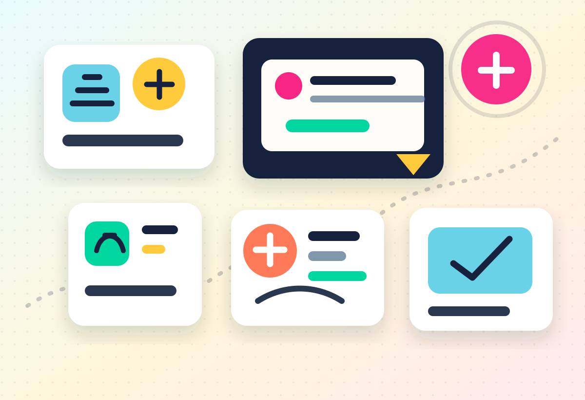
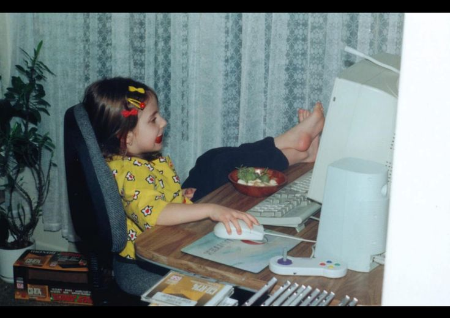
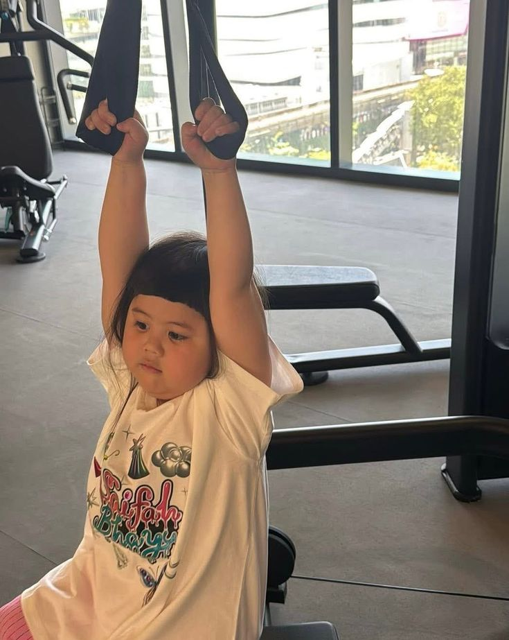

Gestione economica
Budget, affitto, spese pazze e ansia da conto corrente.
Checklist base: entrate, uscite fisse, fondo emergenze, scadenze e una regola semplice per non finire a vivere di bonifici mentali.
Apri contenuti consigliatiGuida anti-panico per diventare grandi senza impazzire
Una guida rapida ed efficace per orientarsi nel mondo adulto: soldi, documenti, lavoro, salute, crescita personale e scelte universitarie spiegate senza paroloni inutili.

Parti da qui
Gestione economica
Checklist base: entrate, uscite fisse, fondo emergenze, scadenze e una regola semplice per non finire a vivere di bonifici mentali.
Apri contenuti consigliatiI principali problemi toccati
Ogni area unisce spiegazioni brevi, esempi realistici e domande frequenti da community.
Budget mensile, affitto, bollette, tasse, risparmio e prime decisioni finanziarie: sentirsi ricchi il 27 e poveri il 3, ma con metodo.
ISEE, SPID, residenza, contratti, scadenze e moduli scritti in lingua misteriosa.

CV, colloqui, primi contratti, networking, stage e gestione della vita da junior.
Medico di base, visite, salute mentale, routine sostenibili e prevenzione senza panico.

Abitudini, confini, autonomia, gestione del tempo e quei giorni in cui anche aprire Notion sembra sport estremo.
Aiuto ai ragazzi delle superiori per scegliere facoltà, città, borse, esami e responsabilità senza andare in crash.
Video, tutorial, guide
Video principale
Una mini guida video su budget, spese fisse, fondo emergenze e scelte furbe appena entrano i primi soldi veri.
Tutorial
Glossario, clausole da controllare e segnali a cui fare attenzione.
Guida
Affitto, coinquilini, spesa, medico, documenti e routine minima.
Video breve
Domande pratiche per chi arriva dalle superiori e non sa da dove iniziare.
Guide evergreen e aggiornabili
Il sito copre tutte le fasi del funnel: capire il problema, risolverlo con una guida, approfondire con tutorial e tornare nel forum quando spunta un dubbio nuovo.
Scoperta
Guide base su casa, spesa, budget, medico, coinquilini e sopravvivenza senza drama.
Soluzione
Tutorial passo-passo aggiornabili ogni anno, con checklist scaricabili e scadenze.
Decisione
Confronti, video brevi, domande guida e storie reali per scegliere senza copiare gli altri.
Engagement
Forum per trasformare dubbi singoli in contenuti nuovi, FAQ e guide sempre più utili.
Pubblico target
Orientamento, metodo, borse, esami, vita sociale e scelte post-diploma.
Casa, soldi, scadenze, salute e tutto quello che impari quando il frigo è tuo e la cena costa meno di un caffè universitario.
Contratti, stipendio, diritti, colloqui, crescita e gestione dell'energia.
Forum anonimo
Uno spazio pensato per domande pratiche, dubbi “forse stupidi” e risposte chiare. Qui sotto c'è una demo interattiva.
Documenti
Risposta in arrivo dalla community: intanto salva documenti, scadenze e CAF disponibili nella tua zona.
Lavoro
Dipende da contratto, mansioni, prospettive e alternative. La guida aiuta a fare una scelta meno impulsiva.
Anteprima video
Storyboard: 1. separa spese fisse e variabili; 2. salva il 10% se puoi; 3. crea un calendario scadenze; 4. concediti qualcosa senza sabotare il mese.